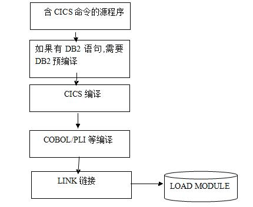

CICS应用编程接口
2011-08-12
开发语言
可以用COBOL,C,C++,Assembler,PL/I等来编写CICS应用程序的主要的大部分逻辑处理功能，而只有少数的一部分功能需要用到CICS命令。
CICS命令格式
EXEC CICS SEND FROM (MSG-AREA) LENGTH(5) END-EXEC ——向终端发送长度为5的MSG-AREA信息
EXEC CICS READ FILE('FILEA') INTO (CUSTOMER-REC) RIDFLD(CUSTOMER-NUM) ——读和修改VSAM文件
EXEC SQL SELECT colum_names INTO program_variables From Table_name WHERE ... END-EXEC ——读和修改关系型数据库
EXEC CICS READ ... RESP(RESPONSE-FIELD) 或 EXEC CICS HANDLE CONDITION ——处理异常条件
CICS API主要服务
CICS API主要服务：访问和修改文件；访问和修改关系、层次性数据库；终端的输入和输出；用户定义的数据队列；在一个事务中的多程序间的控制操纵；启动另一个事务;
CICS程序控制的3种方式
RETURN: 释放控制于上一高层程序。
LINK: 链接出去执行后返回，就像执行一个子程序。
XCTL: 传递控制于制定程序，但不再返回程序，而返回本层。
CICS程序的安装
1、 预编译，即翻译，将EXEC CICS语句翻译成编程语言的源语句。当然，如果源程序中还是用了EXEC SQL嵌套数据库功能，那么在此之前必须先进行关系数据库的预编译。
2、 编译源程序，生成二进制代码。
3、 链接，将链接生成的结果放到装载库(load lib)当中。
我用word简单画了个图，丑了点。
